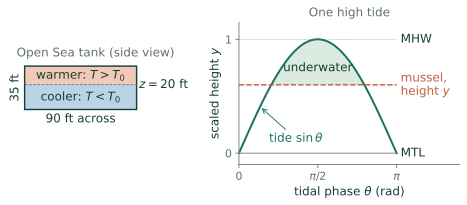

\(\displaystyle\iiint_E f\,dV=\iint_D\Big(\int_{\text{floor}}^{\text{ceiling}}f\,dz\Big)dA\), \(D\) = shadow of \(E\)
\(\bar z=\dfrac{1}{V}\iiint_E z\,dV\)
Enter fractions, decimals, pi, e, sqrt(...), sin(...), cos(...), exp(...), or log(...). Use ^ for powers and radians for angles. Vectors and bounds use commas. Decimal answers are checked to two decimal places (answers smaller than 0.1 need two significant digits); exact forms such as 6pi sqrt(37) are always fine. LaTeX such as \frac{1}{2}, \sqrt{2}, \pi, and \phi is also accepted. Equivalent expressions are accepted; potential functions may differ by a constant. Units are provided beside each input.
Hints and solutions are local worked guidance. They do not send messages to an AI service. Your inputs and notes stay in this browser; this is an ungraded practice site.
On France’s Atlantic coast near Bordeaux, the Dune du Pilat is the tallest sand dune in Europe: a 110 m wall of sand, 2.9 km long, creeping into the pine forest by a few metres every year. The sea wind pushes sand up its gentle seaward slope; the sand then avalanches down a steep slip face on the forest side. Its cross-section is a region bounded by two curves.
Building the model
1From the real world
Width: 600 m; length: 2,900 m
Height: about 110 m
Sand: 55 million m³
The dune advances 1 to 5 m per year toward the forest
A uniform cross-section along the whole length, on a flat base at sea level
1 model unit = 110 m, both across and up
Windward face: a parabola; slip face: a straight line
3So the model is
Cross-section: the region bounded by \(x=4y^2\) (windward), \(x=5.5-1.5y\) (slip face), and \(y=0\) (base)
\(x\) = distance inland from the seaward toe, \(y\) = height (model units)
The model cross-section (1 unit = 110 m, to scale), with a horizontal slice and vertical slices on each side of the crest.
First, on paper
Find where the windward curve meets the slip face by solving a quadratic, and explain which root to reject. Check that the slip face slopes at about \(34^\circ\), the angle at which dry sand avalanches. Sketch the cross-section and draw one horizontal slice (order \(dx\,dy\)) and one vertical slice (order \(dy\,dx\)). Explain why the \(dy\,dx\) order needs two integrals: say where to split and why. A geologist computes the first moment as \[\int_0^4\!\!\int_0^{\sqrt x/2}y\,dy\,dx+\int_4^{5.5}\!\!\int_0^{(5.5-x)/1.5}y\,dy\,dx.\] Sketch both pieces on one picture and combine them into a single integral in the order \(dx\,dy\).
aEnter the crest (x, y) in model units.
A step in the right direction
bFind the area of the cross-section, in square metres (that is, cubic metres of sand per metre of dune length).
A step in the right direction
cFind the height of the cross-section’s centroid above the base, in metres.
A step in the right direction
View full solution +
Follow the reasoning
Crest: \(4y^2=5.5-1.5y\) gives \(8y^2+3y-11=0=(y-1)(8y+11)\), so \(y=1\) or \(y=-11/8\). The negative root is below the ground (the extended curves cross there), so the crest is \((4,1)\): 440 m inland, 110 m high. The slip face drops 1 unit over 1.5 units: \(\tan^{-1}(2/3)\approx33.7^\circ\).
Horizontal slices run from the windward curve \(x=4y^2\) to the slip face \(x=5.5-1.5y\) (test \(y=\tfrac12\): \(1<4.75\)), so \[A=\int_0^1(5.5-1.5y-4y^2)\,dy=5.5-0.75-\tfrac43=\tfrac{41}{12}\] square units \(\approx41{,}342\) m2 per metre of dune.
Vertical slices have top \(\min\!\big(\tfrac{\sqrt x}2,\tfrac{5.5-x}{1.5}\big)\): the formula changes at the crest, \(x=4\). So \(A=\int_0^4\tfrac{\sqrt x}2\,dx+\int_4^{5.5}\tfrac{5.5-x}{1.5}\,dx=\tfrac83+\tfrac34=\tfrac{41}{12}\), the same area.
The geologist’s two pieces are the windward and lee parts of the same region, so their sum is \(\int_0^1\int_{4y^2}^{5.5-1.5y}y\,dx\,dy=\int_0^1(5.5y-1.5y^2-4y^3)\,dy=2.75-0.5-1=\tfrac54\).
Centroid height: \(\bar y=\dfrac{5/4}{41/12}=\dfrac{15}{41}\approx0.366\) units \(\approx40.2\) m, a little above the \(1/3\) of a triangle because the convex windward face holds extra sand high up.
Final answers
a.\(\left(4,\ 1\right)\)
b.\(\frac{124025}{3}\) m2
c.\(\frac{1650}{41}\) m
Discussion
The flat base at sea level: “about 110 m” is the crest’s altitude, but the dune rests on older dunes and forest ground well above sea level, so the sand is much thinner than 110 m (the dune also tapers at its ends). Advancing 1 m means moving the whole cross-section 1 m, so about 41,000 m³ of sand per metre of dune per year in the model, or roughly 19,000 m³ if we scale to the published volume (55 million m³ ÷ 2,900 m).
Think it through
The model cross-section times the 2.9 km length gives about 120 million m³, more than twice the published 55 million m³. Which modelling choice is most to blame? And how much sand must cross each metre of the crest per year for the dune to advance 1 m?
Saved on this browser · Discussion prompt, not automatically graded
Problem 02Core
Monterey Bay: a tank, a tide pool, and a hot mussel
The Monterey Bay Aquarium runs on the bay itself: its pumps draw seawater from Monterey Bay into exhibits like the Open Sea, and just outside its walls the rocks of the intertidal zone are covered and uncovered twice a day by the tide. John Steinbeck’s friend Ed Ricketts studied these shores on nearby Cannery Row. How long is a mussel on the rocks underwater, and how hot does it get when the tide is out?
Building the model
1From the real world
Open Sea exhibit: 90 ft across, 52 ft front to back, 35 ft tall; 1,200,000 US gallons
Monterey tidal datums above MLLW: MHW 1.412 m, MTL 0.873 m, MLW 0.333 m
The tank is a box \(B=[0,90]\times[0,52]\times[0,35]\) ft, \(z\) measured up from the floor
Temperature: \(T-T_0=0.1(z-20)\) °C, warm near the top and cool near the floor
Tide: a sine wave of amplitude \(A=(\text{MHW}-\text{MLW})/2\approx0.54\) m about MTL, period 12.42 h
A mussel at height \(y\) is underwater whenever the water is above it
3So the model is
Tide height above MTL: \(A\sin\theta\), phase \(\theta\) in radians (1 rad = \(12.42/2\pi\) h)
Scaled height \(y=(\text{height}-\text{MTL})/A\); \(0\le y\le1\) is the band from MTL to MHW
Average time underwater in that band: \(2\displaystyle\int_0^1\!\!\int_{\arcsin y}^{\pi/2}d\theta\,dy\)

Left: the tank model. Right: one high tide in scaled units; a mussel at height \(y\) is underwater where the curve is above the line.
First, on paper
Tank: explain why \(\iiint_B1\,dV\) is the tank’s volume, compare it with the published 1.2 million gallons (\(1\) ft\(^3\approx7.48\) gal), and, before computing part (b), predict its sign from where the water is warmer or cooler than the target. Explain why all six orders give the same value. Tide: a mussel at scaled height \(y\) is underwater while \(\sin\theta>y\). Sketch the region of the integral in part (c), write it in the other order, and explain why the reversed integral is easier. Mussel: when the tide leaves it at \(t=0\), its temperature rises at rate \(r(s)\) (°C/h), so \(T(t)-T(0)=\int_0^t r(s)\,ds\). Its heat dose after \(\tau\) hours is \(D=\int_0^\tau\!\int_0^t r(s)\,ds\,dt\). By changing the order, prove \(D=\int_0^\tau(\tau-s)\,r(s)\,ds\), explain the factor \(\tau-s\) in words, and check the case \(r(s)=\) constant.
aFind the volume of the Open Sea tank model, in cubic feet.
A step in the right direction
bFind \(\iiint_B (T-T_0)\,dV\) for the tank, in °C·ft³.
A step in the right direction
cFind the average time underwater during one high tide, for mussels spread evenly in height between mean tide level and mean high water, in hours.
A step in the right direction
View full solution +
Follow the reasoning
Tank: \(\iiint_B1\,dV=90\cdot52\cdot35=163{,}800\) ft\(^3\approx1.225\) million gal, within about 2% of the published 1.2 million gallons (the real tank is not a perfect box).
\(T-T_0=0.1(z-20)\) is warm above \(z=20\) and cool below, and the cool layer is 20 ft thick against 15 ft, so predict a negative total. On a box with a continuous integrand all orders agree (Fubini), and the integrand separates: \(90\cdot52\cdot0.1\int_0^{35}(z-20)\,dz=468(612.5-700)=-40{,}950\) °C·ft3, an average of \(-0.25\) °C.
Tide: scaled height above mean tide level is \(\sin\theta\), \(A=(1.412-0.333)/2\approx0.54\) m, so \(y=1\) is MHW. By symmetry about \(\theta=\pi/2\), the time underwater at height \(y\) is \(2\int_{\arcsin y}^{\pi/2}d\theta\), and the band average is \[2\int_0^1\!\int_{\arcsin y}^{\pi/2}d\theta\,dy=2\int_0^{\pi/2}\!\int_0^{\sin\theta}dy\,d\theta=2\int_0^{\pi/2}\sin\theta\,d\theta=2\text{ rad}.\] As written, the inner integral leaves \(\int\arcsin y\,dy\), which needs integration by parts.
2 radians of phase is \(2\cdot12.42/(2\pi)\approx3.95\) h out of each 12.42 h cycle.
Heat dose: the region is \(0\le s\le t\le\tau\). Reversing, for fixed \(s\) the variable \(t\) runs from \(s\) to \(\tau\), so \(D=\int_0^\tau\!\int_s^\tau r(s)\,dt\,ds=\int_0^\tau(\tau-s)r(s)\,ds\): heating at time \(s\) keeps the mussel warmer for the remaining \(\tau-s\) hours. For constant \(r\), both sides give \(r\tau^2/2\).
Final answers
a.\(163800\) ft3
b.\(-40950.0\)\(^\circ\)C\(\cdot\)ft3
c.\(\frac{12.42}{\pi}\) h
Discussion
Time underwater per tide is (π − 2 arcsin y) radians, and the derivative of arcsin y is \(1/\sqrt{1-y^2}\), which blows up as y approaches 1 (mean high water). Near mean tide level (y = 0) the derivative is 1. So near the top of the band each centimetre higher removes far more underwater time, which is why zones of different species are packed tightly high on the shore.
Think it through
Mussels high on the shore spend less time underwater and get longer, hotter low tides. Using the arcsin formula for time underwater, explain why a small step up the rock near mean high water costs much more underwater time than the same step near mean tide level.
Saved on this browser · Discussion prompt, not automatically graded
Climbers bound for Everest pitch their tents at Base Camp on the Khumbu Glacier, a river of ice about 17 km long that flows down from the mountain and melts away at 4,900 m. Below the Khumbu Icefall, the glacier is a long tongue of ice resting in a U-shaped valley and thinning to nothing at its end. How much ice is in the tongue, and how high does it sit?
Ice: the solid between the parabolic valley floor \(z=y^2\) and the flat ice surface \(z=1-x\), with \(x\ge0\)
Real volume \(=LWH\times\)(scaled volume)
The model ice tongue in scaled coordinates: floor \(z=y^2\), surface \(z=1-x\).
First, on paper
The ice is the solid between the valley floor \(z=y^2\) and the surface \(z=1-x\), with \(x\ge0\); no other bounds are given. Find the hidden bounds on \(x\) and \(y\). Project the solid onto the \(xy\)-plane: sketch the shadow \(D\) and name the floor and the ceiling over it. Then project onto the \(yz\)-plane and onto the \(xz\)-plane: sketch each shadow, state the inner limits, and write the volume integral in each of the three ways. Which projection gives the easiest integral? Evaluate the volume factor two ways and confirm that the answers agree.
aFind the volume of ice in the model tongue, in km³.
A step in the right direction
bFind the area of the tongue’s footprint on the map (its shadow in the xy-plane), in km².
A step in the right direction
cFind the mean height of the ice above the lowest line of the valley floor, in metres.
A step in the right direction
View full solution +
Follow the reasoning
Hidden bounds: \(y^2\le z\le1-x\) forces \(x\le1\) and \(y^2\le1-x\), so \(|y|\le1\). Shadow on the \(xy\)-plane: \(D=\{0\le x\le1,\ -\sqrt{1-x}\le y\le\sqrt{1-x}\}\), floor \(z=y^2\), ceiling \(z=1-x\). \[V=\int_0^1\!\!\int_{-\sqrt{1-x}}^{\sqrt{1-x}}(1-x-y^2)\,dy\,dx=\int_0^1\tfrac43(1-x)^{3/2}\,dx=\tfrac8{15}.\]
On the \(yz\)-plane the shadow is \(\{y^2\le z\le1\}\) and \(0\le x\le1-z\): \(V=\int_{-1}^1\int_{y^2}^1(1-z)\,dz\,dy=\int_{-1}^1\tfrac{(1-y^2)^2}2\,dy=\tfrac8{15}\). On the \(xz\)-plane it is the triangle \(0\le z\le1-x\) with \(|y|\le\sqrt z\): \(V=\int_0^1\int_0^{1-x}2\sqrt z\,dz\,dx\). The \(yz\) projection is easiest: polynomials only.
Real size: \(V=LWH\cdot\tfrac8{15}=10(0.5)(0.3)\tfrac8{15}=0.8\) km3. Footprint: \(LW\int_0^12\sqrt{1-x}\,dx=5\cdot\tfrac43\approx6.67\) km2.
\(\iiint z\,dV=\int_0^1\!\int_{-c}^{c}\tfrac{(1-x)^2-y^4}{2}\,dy\,dx\) with \(c=\sqrt{1-x}\); the inner integral is \(\tfrac45c^5\), so the total is \(\tfrac45\cdot\tfrac27=\tfrac8{35}\). Then \(\bar z=\tfrac{8/35}{8/15}=\tfrac37\) of \(H\), about \(129\) m above the valley’s lowest line.
Final answers
a.\(0.8\) km3
b.\(6.66666666666667\) km2
c.\(\frac{900}{7}\) m
Discussion
Satellites give the surface height everywhere and radar gives the bed along a few lines, so the natural data are “floor and ceiling over each map point”: the xy-projection, with thickness = ceiling − floor as the inner integral. The yz-projection was easiest for this model, but it needs the down-glacier length at each height, which is rarely measured.
Think it through
Glaciologists measure thickness at a few points with radar and the surface everywhere from satellites. Which of your three projections matches that kind of data best, and why?
Saved on this browser · Discussion prompt, not automatically graded
In the desert east of Lake Turkana in northern Kenya, a low-level jet of wind is funnelled between two mountains. The Lake Turkana Wind Power project, 365 turbines and the largest wind farm in sub-Saharan Africa when it was built, sits in its path. Wind power grows like the cube of the wind speed, so a farm’s average output depends on the whole spread of wind speeds, not just the average. Engineers write that average as integrals that cannot all be done in the order they are written.
Wind speeds follow a Weibull distribution of shape 3: \(P(\text{speed}>v)=e^{-(v/c)^3}\), with \(c=12.3\) m/s so that the mean is 11 m/s
Each turbine makes \(0.850\,(v/14)^3\) MW below 14 m/s and 0.850 MW above (no cut-in or cut-out)
3So the model is
Scaled speed \(x=v/14\): \(P(x\text{-speed}>x)=e^{-ax^3}\) with \(a=(14/12.3)^3\approx1.47\); density \(f(x)=3ax^2e^{-ax^3}\)
Integral 1 (below-rated share): \(\displaystyle\int_0^1\!\!\int_{\sqrt[3]p}^{1}f(x)\,dx\,dp\)
Integral 2 (capacity factor): \(CF=6\displaystyle\int_0^1\!\!\int_z^1\!\!\int_y^1e^{-ax^3}\,dx\,dy\,dz\)
The wind model: chance that the scaled speed exceeds \(x\) (left) and the turbine’s power curve (right).
First, on paper
Integral 1: sketch its region in the \((x,p)\)-plane, reverse the order (watch the cube-root boundary, and do not use rectangle limits), and substitute. Integral 2: write its region as a single chain of inequalities \(0\le\square\le\square\le\square\le1\), and explain why it cannot be evaluated in the order written. Project the region onto the \(xy\)-plane and name its floor and ceiling. Reorder it with \(x\) outermost, explaining the cross-section at fixed \(x\), and write one more valid order, \(dy\,dz\,dx\). Which of the two given integrals could you have done as written?
aEvaluate integral 1, the share of the rated output that comes from winds below the rated speed.
A step in the right direction
bAfter reordering integral 2 with x outermost, enter the integrand of the outer x-integral (without the factor 6) as a function of x.
A step in the right direction
cUse the capacity factor from integral 2 to estimate the farm’s annual energy, in GWh.
A step in the right direction
View full solution +
Follow the reasoning
Integral 1: \(0\le p\le1\), \(\sqrt[3]p\le x\le1\) is the region below \(p=x^3\). Reversed: \(\int_0^1\int_0^{x^3}f(x)\,dp\,dx=\int_0^1x^3f(x)\,dx=\int_0^13ax^5e^{-ax^3}\,dx\). With \(u=ax^3\): \(\frac1a\int_0^a ue^{-u}\,du=\frac{1-e^{-a}(1+a)}a\approx0.294\). (As written it also works: the inner integral is \(e^{-ap}-e^{-a}\).)
Integral 2: \(0\le z\le1\), \(z\le y\le1\), \(y\le x\le1\), so \(0\le z\le y\le x\le1\). The innermost \(\int_y^1e^{-ax^3}\,dx\) has no elementary antiderivative. Shadow on the \(xy\)-plane: \(0\le y\le x\le1\), floor \(z=0\), ceiling \(z=y\).
With \(x\) outermost: \(\int_0^1\int_0^x\int_0^y e^{-ax^3}\,dz\,dy\,dx\); the cross-section at fixed \(x\) is the triangle \(0\le z\le y\le x\) of area \(x^2/2\). Another valid order: \(\int_0^1\int_0^x\int_z^x e^{-ax^3}\,dy\,dz\,dx\).
\(CF=6\int_0^1\frac{x^2}2e^{-ax^3}\,dx=\frac{1-e^{-a}}a\approx0.524\), so the farm makes about \(0.524\times310\times8760\approx1{,}423\) GWh a year, close to the published estimate of 1,440 GWh.
Final answers
a.\(0.293934728971967\)
b.\(\frac{x^{2} e^{- 1.47 x^{3}}}{2}\)
c.\(1422.59479756934\) GWh
Discussion
Power grows like the cube of speed, and the cube is convex, so by averaging over the spread of speeds, windy hours contribute much more than calm hours take away (Jensen’s inequality). In the model the cube is capped at the rating, so the capacity factor is 52%, not 49%. A distribution with more time near or above 14 m/s (a larger Weibull scale, or a narrower spread centred above rated speed) would raise it further.
Think it through
The average wind speed is 11 m/s, but using it alone, a turbine rated at 14 m/s would make (11/14)³ ≈ 49% of its rating. Why is the true capacity factor larger, and which feature of the wind distribution would make it larger still?
Saved on this browser · Discussion prompt, not automatically graded
Problem 05Extension
Lifting ships at the Three Gorges
At China’s Three Gorges Dam on the Yangtze, the world’s largest ship lift raises boats of up to 3,000 tons straight up 113 m in a tank of water, like an elevator for ships. A smooth start matters: passengers and cargo feel changes in acceleration (jerk) more than the acceleration itself.
No counterweights (the real lift is counterbalanced)
Smooth start: jerk \(j(u)=j_0\sin(\pi u/T)\) for \(0\le u\le T=10\) s, reaching full speed 0.2 m/s at \(T\)
3So the model is
Position: \(x(T)=\displaystyle\int_0^T\!\!\int_0^t\!\!\int_0^s j(u)\,du\,ds\,dt\) (jerk, then acceleration, speed, and position)
\(g=9.81\) m/s²; water: 1 tonne per m³
The smooth start: jerk, acceleration, speed, and position over the first 10 s (each scaled to its maximum).
First, on paper
Write the water in the basin as a box, and compute its volume as \(\iiint1\,dV\). For the smooth start, position is a triple integral of jerk: \(x(T)=\int_0^T\!\int_0^t\!\int_0^s j(u)\,du\,ds\,dt\). Write the region as an inequality chain, reorder with \(u\) outermost, and show \(x(T)=\int_0^T\frac{(T-u)^2}{2}\,j(u)\,du\). Check it with constant jerk.
aFind the mass of water in the basin, in tonnes (1 m³ of water is 1 tonne).
A step in the right direction
bWithout counterweights, how much energy would it take to lift the full basin of water plus a 3,000 t ship by 113 m? Give megawatt-hours.
A step in the right direction
cWith the smooth-start jerk profile, how far (in metres) has the basin moved when it reaches full speed?
A step in the right direction
View full solution +
Follow the reasoning
Basin: \(\iiint1\,dV=120\cdot18\cdot3.5=7560\) m3, so 7560 t of water.
Energy: \((7560+3000)\times10^3\times9.81\times113\approx1.17\times10^{10}\) J \(\approx3.25\) MWh. Counterweights make the real lift nearly balanced, so the motors supply only a small part of this.
Chain: \(0\le u\le s\le t\le T\). For fixed \(u\), \((s,t)\) ranges over the triangle \(u\le s\le t\le T\) of area \((T-u)^2/2\), so \(x(T)=\int_0^T\frac{(T-u)^2}2j(u)\,du\). Constant jerk \(j_0\) gives \(j_0T^3/6\) both ways.
With \(j(u)=j_0\sin(\pi u/T)\), the speed at \(T\) is \(j_0T^2/\pi=0.2\), so \(j_0=0.2\pi/100\) for \(T=10\) s. Then \(x(T)=j_0T^3\cdot\frac{\pi^2-4}{2\pi^3}\approx0.59\) m (after \(w\to1-w\), \(\int_0^1(1-w)^2\sin\pi w\,dw=\int_0^1w^2\sin\pi w\,dw\)).
Final answers
a.\(7560.0\) t
b.\(3.251688\) MWh
c.\(\frac{1.0 \left(-4 + \pi^{2}\right)}{\pi^{2}}\) m
Discussion
With constant acceleration a = 0.02 m/s², the distance is aT²/2 = 1 m. The smooth start accelerates gently at first, so it spends more of the 10 s moving slowly and covers only about 0.59 m.
Think it through
If the basin instead reached 0.2 m/s with constant acceleration over the same 10 s, how far would it travel, and why does the smooth start cover less distance?
Saved on this browser · Discussion prompt, not automatically graded
Field notes
Where the numbers come from
Published values are snapshots. Assumed geometry and analytical fields are labeled in each problem.
Published site figures
Syndicat Mixte de la Grande Dune du Pilat: visitor brochure (2023)
Official English brochure of the public body that manages the Grand Site de la Dune du Pilat. Figures are rounded; the height is given as about 110 m. The parabola-and-line cross-section in the problem is a model.
Station 9413450; epoch 1983–2001; benchmark sheet published October 12, 2011. Meters above MLLW. These are long-term reference levels, not successive tide readings or a forecast.
Wikipedia, accessed November 17, 2026, citing an ASTER study of supraglacial lakes in the Everest region. Only the length and elevations are published here; the tongue length, width, thickness, and shape in the problem are assumptions for a model, not survey values.
Lake Turkana Wind Power Project: Updated ESIA Summary (EIB, 2011)
European Investment Bank register, Updated Environmental and Social Impact Assessment Summary, November 2011. The wind farm was completed in 2018 with the same 365 V52 turbines. The Weibull wind model and the turbine power curve in the problem are assumptions.
Wikipedia, accessed November 17, 2026; the lift height is cited there to the China Three Gorges Project. The smooth-start motion in the problem is an assumption.